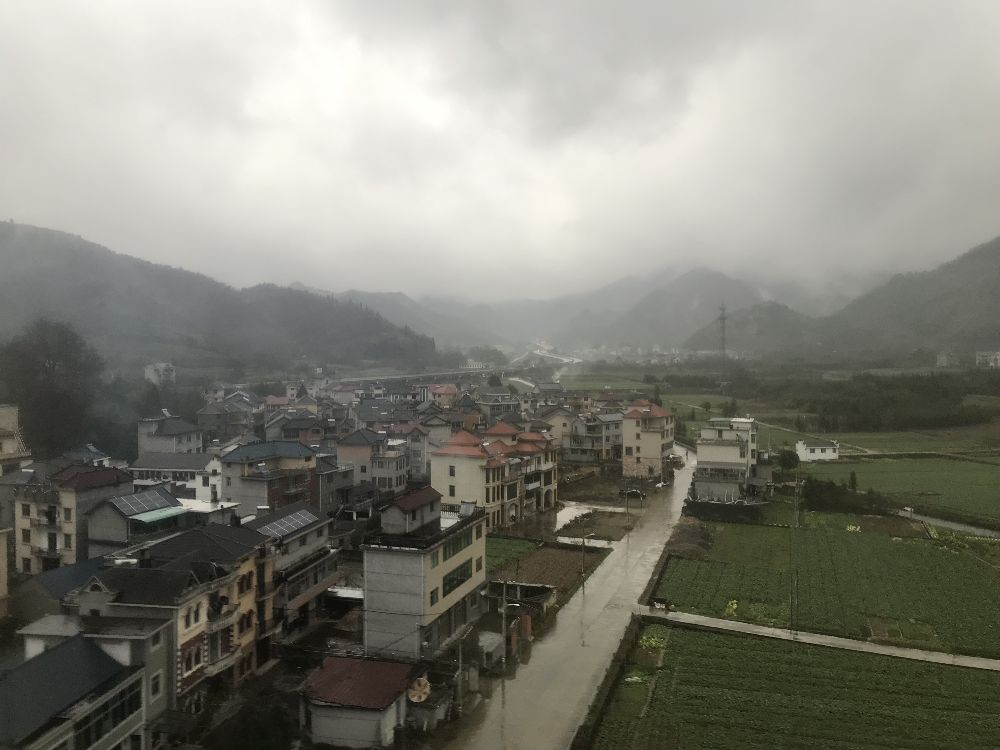
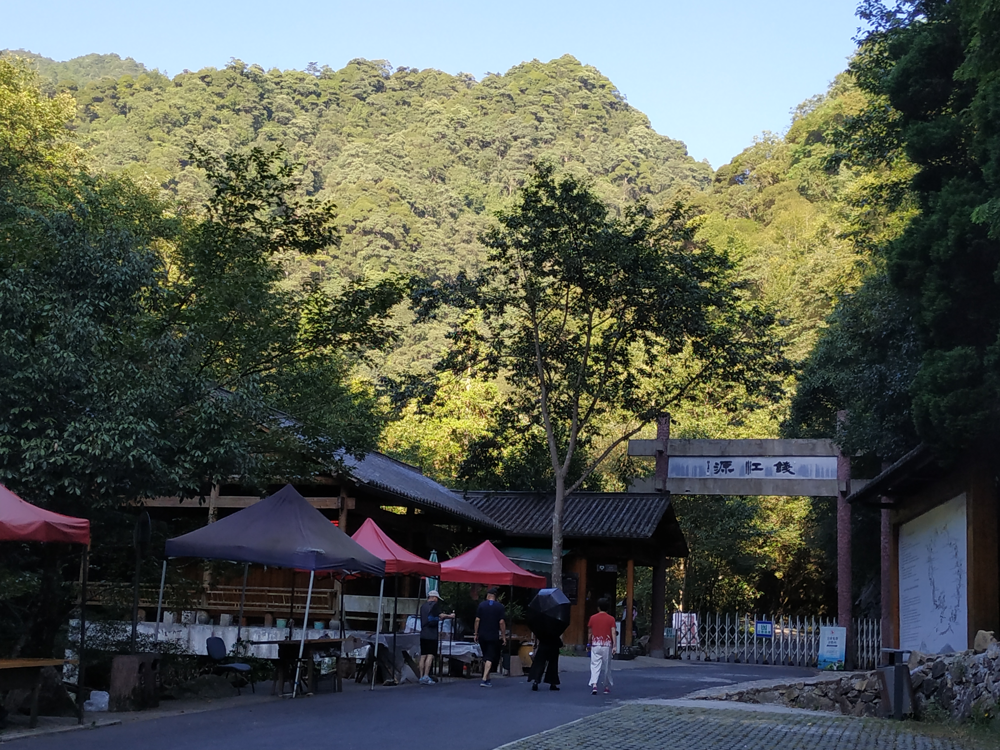
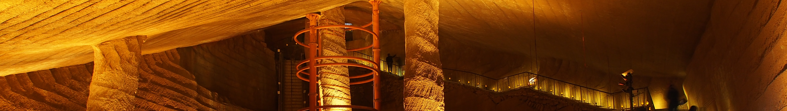
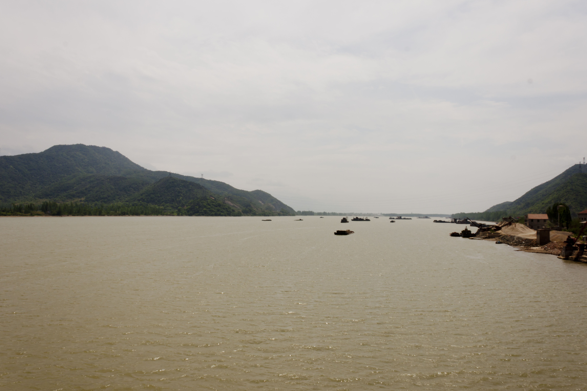

开化古村方向实景
对应 D1-D4 的开化段，先看浙西乡村的整体气质，和霞山古村、高田坑这条线的感觉接近。
来源：Wikimedia Commons, 201901 Yanglin, Kaihua.jpg
杭州出发，先住开化，再转龙游和桐庐。这个版本可以直接发给老人打开，页面是正式 HTTPS 静态网页，带真实照片、真实地图路线、每天做什么一眼就能看明白。
整体节奏是“开化深度游 4 天，龙游中转 1 天，桐庐富春江线 3 天”。前半段看古村和山水，后半段放慢节奏看石窟、古村和溪谷。
下面这张地图会把整趟自驾主线和主要落脚点连起来。点任意圆点，可以看当天看什么、住哪里，还能直接跳到高德地图导航。
说明：路线由公开 OSRM 驾车路线服务动态生成，底图来自 OpenStreetMap。首次打开可能需要 1 到 2 秒加载。
这里放的是实景照片，不再是示意图。为了稳定打开，照片已随站点一起部署。

对应 D1-D4 的开化段，先看浙西乡村的整体气质，和霞山古村、高田坑这条线的感觉接近。
来源：Wikimedia Commons, 201901 Yanglin, Kaihua.jpg

对应 D3 的钱江源 / 齐溪一线，是这趟最像“真正进山”的一天。
来源：Wikimedia Commons, Kaihua Qianjiangyuan Guojia Senlin Gongyuan 2018.07.20 07-28-19.jpg

对应 D5 的龙游中转日，适合雨天，也适合体力想省一点的时候看。
来源：Wikimedia Commons, Longyou Grottoes Banner.jpg

对应 D6-D8 的桐庐收尾段，深澳、环溪、芦茨和石舍都在这一片慢慢玩。
来源：Wikimedia Commons, Fuchun River.jpg
下面把原来的中文行程保留下来，改成更容易扫读的卡片。
到达日，节奏最轻，早点入住休息。
人文慢游日，老人最容易接受。
整趟最像进山的一天。
最小众、也最出片的一天。
转场日，不要贪多。
先看石窟，再去桐庐。
开始进入富春江慢生活段。
收尾返程日，玩到舒服就回。
真正要取舍时，记住三句话就够了。
优先把龙游石窟、古村慢逛放到雨天。钱江源、高田坑、台回山这些更吃天气，留给晴天。
钱江源不要走太满，高田坑和台回山只留最顺的一段，古村就选 1 到 2 个代表点慢慢看。
D5 的转场日只做转场，不加别的景点。回杭州那天也不要把返程拖太晚。